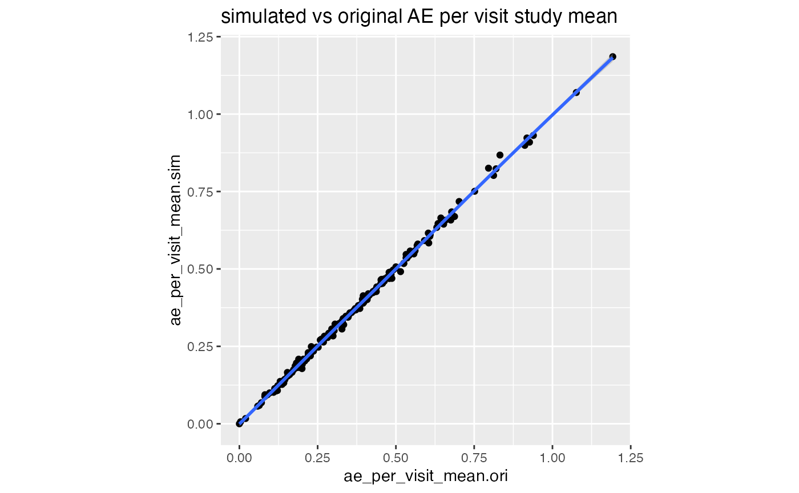
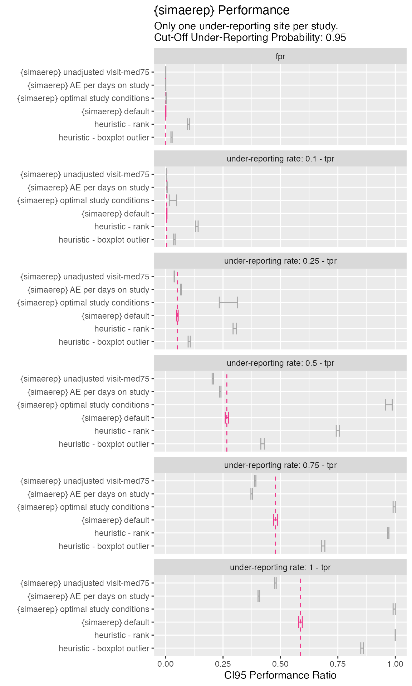

Load
suppressPackageStartupMessages(library(tidyverse))
suppressPackageStartupMessages(library(knitr))
suppressPackageStartupMessages(library(furrr))
suppressPackageStartupMessages(library(future))
suppressPackageStartupMessages(library(simaerep))
# RAM ~26 GB
# plan 4GB per core
plan(multisession, workers = 6)Introduction
We want to define minimal requirements for simulating test data that reflects realistic portfolio data which we then want to use to benchmark overall {simaerep} performance.
Performance
These simulations take some time to run and require multiple cores and appropriate memory. Rendering articles in {pkgdown} can be a bit unstable so we recommend to render first using pure {rmarkdown} to generate the intermediate csv files.
rmarkdown::render("vignettes/_portfolio_perf.Rmd", knit_root_dir = "/home/koneswab/simaerep")Portfolio Configuration
The portfolio configuration will be used to generate compliant test data that is similar to a realistic portfolio of studies in which all sites are compliant. We will subsequently remove a percentage of AEs from each study site and calculate AE under-reporting statistics to calculate overall detection thresholds. The portfolio configuration should give a minimal description of the portfolio without violating data privacy laws or competitive intellectual property. We propose to include the following metrics into the portfolio configuration:
site parameters:
- mean of all maximum patient visits
- sd of of all maximum patient visits
- total number patients
study parameters:
- mean AE per visit
The information contained in a portfolio configuration is very scarce and thus can be shared more easily within the industry. We can use those parameters to simulate test data for assessing {simaerep} performance on a given portfolio.
We can start with a maximum aggregation of visit and n_ae on patient
level starting with df_visit as we would use it for
simaerep::site_aggr(). We can use
simaerep::get_config to generate a valid portfolio
configuration, which will automatically apply a few filters:
- remove patients with 0 visits
- minimum number of patients per study
- minimum number of sites per study
- anonymize study and site IDs
df_visit1 <- sim_test_data_study(n_pat = 100, n_sites = 10,
frac_site_with_ur = 0.4, ur_rate = 0.6)
df_visit1$study_id <- "A"
df_visit2 <- sim_test_data_study(n_pat = 100, n_sites = 10,
frac_site_with_ur = 0.2, ur_rate = 0.1)
df_visit2$study_id <- "B"
df_visit <- bind_rows(df_visit1, df_visit2)
df_site_max <- df_visit %>%
group_by(study_id, site_number, patnum) %>%
summarise(max_visit = max(visit),
max_ae = max(n_ae),
.groups = "drop")
df_config <- simaerep::get_config(
df_site_max, anonymize = TRUE,
min_pat_per_study = 100,
min_sites_per_study = 10
)
df_config %>%
head(25) %>%
knitr::kable()| study_id | ae_per_visit_mean | site_number | max_visit_sd | max_visit_mean | n_pat |
|---|---|---|---|---|---|
| 0001 | 0.3712008 | 0001 | 3.399346 | 20.0 | 10 |
| 0001 | 0.3712008 | 0002 | 4.595892 | 20.7 | 10 |
| 0001 | 0.3712008 | 0003 | 3.425395 | 19.8 | 10 |
| 0001 | 0.3712008 | 0004 | 3.622461 | 20.3 | 10 |
| 0001 | 0.3712008 | 0005 | 4.242641 | 19.0 | 10 |
| 0001 | 0.3712008 | 0006 | 3.871549 | 20.1 | 10 |
| 0001 | 0.3712008 | 0007 | 3.749074 | 21.5 | 10 |
| 0001 | 0.3712008 | 0008 | 3.381321 | 18.9 | 10 |
| 0001 | 0.3712008 | 0009 | 4.491968 | 17.8 | 10 |
| 0001 | 0.3712008 | 0010 | 3.747592 | 22.6 | 10 |
| 0002 | 0.5120545 | 0001 | 3.231787 | 18.0 | 10 |
| 0002 | 0.5120545 | 0002 | 6.569289 | 19.4 | 10 |
| 0002 | 0.5120545 | 0003 | 3.446415 | 21.1 | 10 |
| 0002 | 0.5120545 | 0004 | 3.831159 | 18.3 | 10 |
| 0002 | 0.5120545 | 0005 | 3.590110 | 19.0 | 10 |
| 0002 | 0.5120545 | 0006 | 5.542763 | 17.5 | 10 |
| 0002 | 0.5120545 | 0007 | 3.047768 | 18.8 | 10 |
| 0002 | 0.5120545 | 0008 | 3.119829 | 19.8 | 10 |
| 0002 | 0.5120545 | 0009 | 3.400980 | 19.7 | 10 |
| 0002 | 0.5120545 | 0010 | 4.779586 | 19.2 | 10 |
Simulate Portfolio from Configuration
We can now apply sim_test_data_portfolio which uses
sim_test_data_study() to generate artificial data on visit
level.
df_portf <- sim_test_data_portfolio(df_config)
df_portf %>%
head(25) %>%
knitr::kable()| study_id | ae_per_visit_mean | site_number | max_visit_sd | max_visit_mean | patnum | visit | n_ae |
|---|---|---|---|---|---|---|---|
| 0001 | 0.3712008 | 0001 | 3.399346 | 20 | 0001 | 1 | 0 |
| 0001 | 0.3712008 | 0001 | 3.399346 | 20 | 0001 | 2 | 1 |
| 0001 | 0.3712008 | 0001 | 3.399346 | 20 | 0001 | 3 | 1 |
| 0001 | 0.3712008 | 0001 | 3.399346 | 20 | 0001 | 4 | 1 |
| 0001 | 0.3712008 | 0001 | 3.399346 | 20 | 0001 | 5 | 1 |
| 0001 | 0.3712008 | 0001 | 3.399346 | 20 | 0001 | 6 | 2 |
| 0001 | 0.3712008 | 0001 | 3.399346 | 20 | 0001 | 7 | 3 |
| 0001 | 0.3712008 | 0001 | 3.399346 | 20 | 0001 | 8 | 5 |
| 0001 | 0.3712008 | 0001 | 3.399346 | 20 | 0001 | 9 | 6 |
| 0001 | 0.3712008 | 0001 | 3.399346 | 20 | 0001 | 10 | 6 |
| 0001 | 0.3712008 | 0001 | 3.399346 | 20 | 0001 | 11 | 6 |
| 0001 | 0.3712008 | 0001 | 3.399346 | 20 | 0001 | 12 | 7 |
| 0001 | 0.3712008 | 0001 | 3.399346 | 20 | 0001 | 13 | 8 |
| 0001 | 0.3712008 | 0001 | 3.399346 | 20 | 0001 | 14 | 8 |
| 0001 | 0.3712008 | 0001 | 3.399346 | 20 | 0001 | 15 | 9 |
| 0001 | 0.3712008 | 0001 | 3.399346 | 20 | 0001 | 16 | 9 |
| 0001 | 0.3712008 | 0001 | 3.399346 | 20 | 0001 | 17 | 9 |
| 0001 | 0.3712008 | 0001 | 3.399346 | 20 | 0001 | 18 | 10 |
| 0001 | 0.3712008 | 0001 | 3.399346 | 20 | 0001 | 19 | 10 |
| 0001 | 0.3712008 | 0001 | 3.399346 | 20 | 0001 | 20 | 11 |
| 0001 | 0.3712008 | 0001 | 3.399346 | 20 | 0001 | 21 | 11 |
| 0001 | 0.3712008 | 0001 | 3.399346 | 20 | 0001 | 22 | 11 |
| 0001 | 0.3712008 | 0001 | 3.399346 | 20 | 0001 | 23 | 11 |
| 0001 | 0.3712008 | 0001 | 3.399346 | 20 | 0002 | 1 | 0 |
| 0001 | 0.3712008 | 0001 | 3.399346 | 20 | 0002 | 2 | 0 |
Load Realistic Configuration
Here we load a realistic portfolio configuration.
| study_id | ae_per_visit_mean | ae_per_day_mean | site_number | max_visit_sd | max_visit_mean | max_days_sd | max_days_mean | n_pat |
|---|---|---|---|---|---|---|---|---|
| 0001 | 0.2687087 | 0.0072492 | 0001 | 0.7071068 | 22.50000 | 622 | 622 | 2 |
| 0001 | 0.2687087 | 0.0072492 | 0002 | 2.1213203 | 28.50000 | 1350 | 1350 | 2 |
| 0001 | 0.2687087 | 0.0072492 | 0003 | 0.5773503 | 19.50000 | 738 | 738 | 4 |
| 0001 | 0.2687087 | 0.0072492 | 0004 | 8.8694231 | 31.33333 | 1461 | 1461 | 6 |
| 0001 | 0.2687087 | 0.0072492 | 0005 | 0.0000000 | 30.00000 | 1253 | 1253 | 1 |
| 0001 | 0.2687087 | 0.0072492 | 0006 | 0.0000000 | 35.00000 | 1479 | 1479 | 1 |
| 0001 | 0.2687087 | 0.0072492 | 0007 | 0.0000000 | 36.00000 | 1415 | 1415 | 1 |
| 0001 | 0.2687087 | 0.0072492 | 0008 | 5.3363087 | 26.14286 | 971 | 971 | 7 |
| 0001 | 0.2687087 | 0.0072492 | 0009 | 0.0000000 | 20.00000 | 756 | 756 | 2 |
| 0001 | 0.2687087 | 0.0072492 | 0010 | 1.8165902 | 27.40000 | 1364 | 1364 | 5 |
| 0001 | 0.2687087 | 0.0072492 | 0011 | 1.7320508 | 27.00000 | 1190 | 1190 | 3 |
| 0001 | 0.2687087 | 0.0072492 | 0012 | 1.4142136 | 26.00000 | 1186 | 1186 | 2 |
| 0001 | 0.2687087 | 0.0072492 | 0013 | 0.0000000 | 25.00000 | 1127 | 1127 | 1 |
| 0001 | 0.2687087 | 0.0072492 | 0014 | 0.0000000 | 18.00000 | 566 | 566 | 1 |
| 0001 | 0.2687087 | 0.0072492 | 0015 | 1.7078251 | 18.75000 | 588 | 588 | 4 |
| 0001 | 0.2687087 | 0.0072492 | 0016 | 0.0000000 | 25.00000 | 644 | 644 | 1 |
| 0001 | 0.2687087 | 0.0072492 | 0017 | 1.0000000 | 22.00000 | 827 | 827 | 3 |
| 0001 | 0.2687087 | 0.0072492 | 0018 | 4.0414519 | 32.50000 | 1534 | 1534 | 4 |
| 0001 | 0.2687087 | 0.0072492 | 0019 | 12.9408913 | 25.33333 | 1183 | 1183 | 6 |
| 0001 | 0.2687087 | 0.0072492 | 0020 | 0.5773503 | 20.66667 | 770 | 770 | 3 |
| 0001 | 0.2687087 | 0.0072492 | 0021 | 14.8492424 | 28.50000 | 666 | 666 | 2 |
| 0001 | 0.2687087 | 0.0072492 | 0022 | 9.0369611 | 26.50000 | 987 | 987 | 4 |
| 0001 | 0.2687087 | 0.0072492 | 0023 | 0.0000000 | 23.00000 | 931 | 931 | 1 |
| 0001 | 0.2687087 | 0.0072492 | 0024 | 0.0000000 | 38.00000 | 938 | 938 | 1 |
| 0001 | 0.2687087 | 0.0072492 | 0025 | 6.3639610 | 26.50000 | 938 | 938 | 2 |
Simulate Portfolio
And again we simulate artificial visit level data. Using parallel processing. At this stage we have simulated compliant test data of a realistic study portfolio.
df_portf <- sim_test_data_portfolio(df_config, parallel = TRUE, progress = TRUE)
df_portf %>%
head(25) %>%
knitr::kable()| study_id | ae_per_visit_mean | ae_per_day_mean | site_number | max_visit_sd | max_visit_mean | max_days_sd | max_days_mean | patnum | visit | n_ae |
|---|---|---|---|---|---|---|---|---|---|---|
| 0001 | 0.2687087 | 0.0072492 | 0001 | 0.7071068 | 22.5 | 622 | 622 | 0001 | 1 | 0 |
| 0001 | 0.2687087 | 0.0072492 | 0001 | 0.7071068 | 22.5 | 622 | 622 | 0001 | 2 | 0 |
| 0001 | 0.2687087 | 0.0072492 | 0001 | 0.7071068 | 22.5 | 622 | 622 | 0001 | 3 | 0 |
| 0001 | 0.2687087 | 0.0072492 | 0001 | 0.7071068 | 22.5 | 622 | 622 | 0001 | 4 | 1 |
| 0001 | 0.2687087 | 0.0072492 | 0001 | 0.7071068 | 22.5 | 622 | 622 | 0001 | 5 | 2 |
| 0001 | 0.2687087 | 0.0072492 | 0001 | 0.7071068 | 22.5 | 622 | 622 | 0001 | 6 | 3 |
| 0001 | 0.2687087 | 0.0072492 | 0001 | 0.7071068 | 22.5 | 622 | 622 | 0001 | 7 | 4 |
| 0001 | 0.2687087 | 0.0072492 | 0001 | 0.7071068 | 22.5 | 622 | 622 | 0001 | 8 | 4 |
| 0001 | 0.2687087 | 0.0072492 | 0001 | 0.7071068 | 22.5 | 622 | 622 | 0001 | 9 | 5 |
| 0001 | 0.2687087 | 0.0072492 | 0001 | 0.7071068 | 22.5 | 622 | 622 | 0001 | 10 | 5 |
| 0001 | 0.2687087 | 0.0072492 | 0001 | 0.7071068 | 22.5 | 622 | 622 | 0001 | 11 | 5 |
| 0001 | 0.2687087 | 0.0072492 | 0001 | 0.7071068 | 22.5 | 622 | 622 | 0001 | 12 | 6 |
| 0001 | 0.2687087 | 0.0072492 | 0001 | 0.7071068 | 22.5 | 622 | 622 | 0001 | 13 | 7 |
| 0001 | 0.2687087 | 0.0072492 | 0001 | 0.7071068 | 22.5 | 622 | 622 | 0001 | 14 | 7 |
| 0001 | 0.2687087 | 0.0072492 | 0001 | 0.7071068 | 22.5 | 622 | 622 | 0001 | 15 | 7 |
| 0001 | 0.2687087 | 0.0072492 | 0001 | 0.7071068 | 22.5 | 622 | 622 | 0001 | 16 | 7 |
| 0001 | 0.2687087 | 0.0072492 | 0001 | 0.7071068 | 22.5 | 622 | 622 | 0001 | 17 | 7 |
| 0001 | 0.2687087 | 0.0072492 | 0001 | 0.7071068 | 22.5 | 622 | 622 | 0001 | 18 | 9 |
| 0001 | 0.2687087 | 0.0072492 | 0001 | 0.7071068 | 22.5 | 622 | 622 | 0001 | 19 | 9 |
| 0001 | 0.2687087 | 0.0072492 | 0001 | 0.7071068 | 22.5 | 622 | 622 | 0001 | 20 | 9 |
| 0001 | 0.2687087 | 0.0072492 | 0001 | 0.7071068 | 22.5 | 622 | 622 | 0001 | 21 | 9 |
| 0001 | 0.2687087 | 0.0072492 | 0001 | 0.7071068 | 22.5 | 622 | 622 | 0001 | 22 | 9 |
| 0001 | 0.2687087 | 0.0072492 | 0001 | 0.7071068 | 22.5 | 622 | 622 | 0002 | 1 | 0 |
| 0001 | 0.2687087 | 0.0072492 | 0001 | 0.7071068 | 22.5 | 622 | 622 | 0002 | 2 | 0 |
| 0001 | 0.2687087 | 0.0072492 | 0001 | 0.7071068 | 22.5 | 622 | 622 | 0002 | 3 | 0 |
Confirm that Portfolio Simulation results in Similar Configuration
We will now use the simulated portfolio data and extract the configuration. We expect that the configuration that we will be extracting is very similar to the configuration that we started out with in the first place.
df_site_max_portf <- df_portf %>%
group_by(study_id, site_number, patnum) %>%
summarise(max_visit = max(visit),
max_ae = max(n_ae),
.groups = "drop")
df_config_portf <- simaerep::get_config(df_site_max_portf, anonymize = TRUE, min_pat_per_study = 100, min_sites_per_study = 10)
df_comp <- df_config %>%
left_join(
df_config_portf,
by = c("study_id", "site_number"),
suffix = c(".ori", ".sim")
) %>%
select(
study_id,
starts_with("ae"),
site_number,
contains("max_visit_sd"),
contains("max_visit_mean"),
contains("n_pat")
)
df_comp %>%
select(study_id, starts_with("ae")) %>%
distinct() %>%
ggplot(aes(ae_per_visit_mean.ori, ae_per_visit_mean.sim)) +
geom_point() +
geom_smooth() +
labs(title = "simulated vs original AE per visit study mean") +
theme(aspect.ratio = 1)
df_comp %>%
ggplot(aes(max_visit_sd.ori, max_visit_sd.sim)) +
geom_point() +
geom_smooth() +
geom_abline(slope = 1, color = "red") +
labs(title = "simulated vs original max visit sd site") +
theme(aspect.ratio = 1)
In our portfolio simulation we sample the patient maximum visit values from a normal distribution. If that returns values smaller than 1 we replace it with one. The larger the SD values compared to the mean values the more likely we will sample a patient maximum visit smaller than one. Every time we have to do that correction we are lowering the patient maximum visit SD in our simulation, which we can see in the graph above.
df_comp %>%
ggplot(aes(max_visit_mean.ori, max_visit_mean.sim)) +
geom_point() +
geom_smooth() +
geom_abline(slope = 1, color = "red") +
labs(title = "simulated vs original max visit mean site") +
theme(aspect.ratio = 1)
df_comp %>%
ggplot(aes(n_pat.ori, n_pat.sim)) +
geom_point() +
geom_smooth() +
labs(title = "simulated vs original n_pat site") +
theme(aspect.ratio = 1)
Get Under-Reporting Probability for Different Under Reporting Scenarios
The performance of detecting AE under-reporting is dependent on three things:
- the higher the mean AE per visit on study level the better
- the higher the number of patients at an under-reporting site the better
- the higher the maximum visit number per patient the better
- the higher the number of under-reporting sites in a study the worse
In our initial usability assessment we have fixed those parameters.
Here we are going leave them as they are in the portfolio. The vanilla
version of our artificial portfolio data does not contain any
under-reporting sites yet. However
simaerep::sim_ur_scenarios() will apply under-reporting
scenarios to each site. Reducing the number of AEs by a given
under-reporting rate (ur_rate) for all patients at the site and add the
corresponding under-reporting statistics.
df_scen <- sim_ur_scenarios(
df_portf,
extra_ur_sites = 0,
ur_rate = c(0.1, 0.25, 0.5, 0.75, 1),
parallel = TRUE,
poisson = TRUE,
prob_lower = TRUE,
progress = TRUE
)
readr::write_csv(df_scen, file = "scen.csv")| study_id | site_number | n_pat | n_pat_with_med75 | visit_med75 | mean_ae_site_med75 | mean_ae_study_med75 | n_pat_with_med75_study | extra_ur_sites | frac_pat_with_ur | ur_rate | pval | prob_low | pval_adj | pval_prob_ur | prob_low_adj | prob_low_prob_ur |
|---|---|---|---|---|---|---|---|---|---|---|---|---|---|---|---|---|
| 0001 | 0001 | 2 | 2 | 21 | 8.000 | 5.389610 | 77 | 0 | 0.0000000 | 0.00 | 1.0000000 | 1.000 | 1.0000000 | 0.0000000 | 1.0000000 | 0.0000000 |
| 0001 | 0001 | 2 | 2 | 21 | 7.200 | 5.389610 | 77 | 0 | 0.0253165 | 0.10 | 1.0000000 | 1.000 | 1.0000000 | 0.0000000 | 1.0000000 | 0.0000000 |
| 0001 | 0001 | 2 | 2 | 21 | 6.000 | 5.389610 | 77 | 0 | 0.0253165 | 0.25 | 1.0000000 | 1.000 | 1.0000000 | 0.0000000 | 1.0000000 | 0.0000000 |
| 0001 | 0001 | 2 | 2 | 21 | 4.000 | 5.389610 | 77 | 0 | 0.0253165 | 0.50 | 0.5336674 | 0.251 | 1.0000000 | 0.0000000 | 0.3722697 | 0.6277303 |
| 0001 | 0001 | 2 | 2 | 21 | 2.000 | 5.389610 | 77 | 0 | 0.0253165 | 0.75 | 0.0408679 | 0.021 | 0.1541303 | 0.8458697 | 0.0644651 | 0.9355349 |
| 0001 | 0001 | 2 | 2 | 21 | 0.000 | 5.389610 | 77 | 0 | 0.0253165 | 1.00 | 0.0000535 | 0.000 | 0.0005289 | 0.9994711 | 0.0000000 | 1.0000000 |
| 0001 | 0002 | 2 | 2 | 29 | 6.000 | 7.035714 | 28 | 0 | 0.0000000 | 0.00 | 0.6787179 | 0.341 | 1.0000000 | 0.0000000 | 0.4688750 | 0.5311250 |
| 0001 | 0002 | 2 | 2 | 29 | 5.400 | 7.035714 | 28 | 0 | 0.0666667 | 0.10 | 1.0000000 | 0.176 | 1.0000000 | 0.0000000 | 0.2848000 | 0.7152000 |
| 0001 | 0002 | 2 | 2 | 29 | 4.500 | 7.035714 | 28 | 0 | 0.0666667 | 0.25 | 0.2098822 | 0.096 | 0.6442896 | 0.3557104 | 0.1849927 | 0.8150073 |
| 0001 | 0002 | 2 | 2 | 29 | 3.000 | 7.035714 | 28 | 0 | 0.0666667 | 0.50 | 0.0333859 | 0.024 | 0.1315503 | 0.8684497 | 0.0728276 | 0.9271724 |
| 0001 | 0002 | 2 | 2 | 29 | 1.500 | 7.035714 | 28 | 0 | 0.0666667 | 0.75 | 0.0010018 | 0.006 | 0.0071561 | 0.9928439 | 0.0264000 | 0.9736000 |
| 0001 | 0002 | 2 | 2 | 29 | 0.000 | 7.035714 | 28 | 0 | 0.0666667 | 1.00 | 0.0000022 | 0.006 | 0.0000330 | 0.9999670 | 0.0264000 | 0.9736000 |
| 0001 | 0003 | 4 | 4 | 18 | 6.000 | 4.801980 | 101 | 0 | 0.0000000 | 0.00 | 1.0000000 | 1.000 | 1.0000000 | 0.0000000 | 1.0000000 | 0.0000000 |
| 0001 | 0003 | 4 | 4 | 18 | 5.400 | 4.801980 | 101 | 0 | 0.0380952 | 0.10 | 1.0000000 | 1.000 | 1.0000000 | 0.0000000 | 1.0000000 | 0.0000000 |
| 0001 | 0003 | 4 | 4 | 18 | 4.500 | 4.801980 | 101 | 0 | 0.0380952 | 0.25 | 0.9071723 | 0.444 | 1.0000000 | 0.0000000 | 0.5717854 | 0.4282146 |
| 0001 | 0003 | 4 | 4 | 18 | 3.000 | 4.801980 | 101 | 0 | 0.0380952 | 0.50 | 0.1258534 | 0.063 | 0.4259653 | 0.5740347 | 0.1363279 | 0.8636721 |
| 0001 | 0003 | 4 | 4 | 18 | 1.500 | 4.801980 | 101 | 0 | 0.0380952 | 0.75 | 0.0012669 | 0.000 | 0.0085757 | 0.9914243 | 0.0000000 | 1.0000000 |
| 0001 | 0003 | 4 | 4 | 18 | 0.000 | 4.801980 | 101 | 0 | 0.0380952 | 1.00 | 0.0000000 | 0.000 | 0.0000004 | 0.9999996 | 0.0000000 | 1.0000000 |
| 0001 | 0004 | 6 | 4 | 31 | 7.500 | 7.850000 | 20 | 0 | 0.0000000 | 0.00 | 0.9218103 | 0.444 | 1.0000000 | 0.0000000 | 0.5717854 | 0.4282146 |
| 0001 | 0004 | 6 | 4 | 31 | 6.750 | 7.850000 | 20 | 0 | 0.1666667 | 0.10 | 0.5525245 | 0.231 | 1.0000000 | 0.0000000 | 0.3504828 | 0.6495172 |
| 0001 | 0004 | 6 | 4 | 31 | 5.625 | 7.850000 | 20 | 0 | 0.1666667 | 0.25 | 1.0000000 | 0.070 | 1.0000000 | 0.0000000 | 0.1443750 | 0.8556250 |
| 0001 | 0004 | 6 | 4 | 31 | 3.750 | 7.850000 | 20 | 0 | 0.1666667 | 0.50 | 0.0039482 | 0.006 | 0.0212722 | 0.9787278 | 0.0264000 | 0.9736000 |
| 0001 | 0004 | 6 | 4 | 31 | 1.875 | 7.850000 | 20 | 0 | 0.1666667 | 0.75 | 1.0000000 | 0.001 | 1.0000000 | 0.0000000 | 0.0064390 | 0.9935610 |
| 0001 | 0004 | 6 | 4 | 31 | 0.000 | 7.850000 | 20 | 0 | 0.1666667 | 1.00 | 0.0000000 | 0.001 | 0.0000000 | 1.0000000 | 0.0064390 | 0.9935610 |
| 0001 | 0005 | 1 | 1 | 30 | 2.000 | 7.555556 | 27 | 0 | 0.0000000 | 0.00 | 0.0377761 | 0.031 | 0.1445345 | 0.8554655 | 0.0818400 | 0.9181600 |
Portfolio Performance
For every site in the portfolio we have now generated the AE under-reporting probability for the following under-reporting rates 0, 0.25, 0.5, 0.75 and 1:
df_scen %>%
select(study_id, site_number, ur_rate, prob_low_prob_ur) %>%
head(25) %>%
knitr::kable()| study_id | site_number | ur_rate | prob_low_prob_ur |
|---|---|---|---|
| 0001 | 0001 | 0.00 | 0.0000000 |
| 0001 | 0001 | 0.10 | 0.0000000 |
| 0001 | 0001 | 0.25 | 0.0000000 |
| 0001 | 0001 | 0.50 | 0.6277303 |
| 0001 | 0001 | 0.75 | 0.9355349 |
| 0001 | 0001 | 1.00 | 1.0000000 |
| 0001 | 0002 | 0.00 | 0.5311250 |
| 0001 | 0002 | 0.10 | 0.7152000 |
| 0001 | 0002 | 0.25 | 0.8150073 |
| 0001 | 0002 | 0.50 | 0.9271724 |
| 0001 | 0002 | 0.75 | 0.9736000 |
| 0001 | 0002 | 1.00 | 0.9736000 |
| 0001 | 0003 | 0.00 | 0.0000000 |
| 0001 | 0003 | 0.10 | 0.0000000 |
| 0001 | 0003 | 0.25 | 0.4282146 |
| 0001 | 0003 | 0.50 | 0.8636721 |
| 0001 | 0003 | 0.75 | 1.0000000 |
| 0001 | 0003 | 1.00 | 1.0000000 |
| 0001 | 0004 | 0.00 | 0.4282146 |
| 0001 | 0004 | 0.10 | 0.6495172 |
| 0001 | 0004 | 0.25 | 0.8556250 |
| 0001 | 0004 | 0.50 | 0.9736000 |
| 0001 | 0004 | 0.75 | 0.9935610 |
| 0001 | 0004 | 1.00 | 0.9935610 |
| 0001 | 0005 | 0.00 | 0.9181600 |
We usually recommend a 0.95 threshold to flag sites as under-reporting. We can use this threshold to calculate the ratio of flagged sites per under-reporting rate. The zero under-reporting scenario defines the expected false positive rates (fpr as fp/N), while the other scenarios give us the expected true positive rate (tpr as tp/P) for sites with that under-reporting level. The condition for the tpr and fpr rates for the simulated portfolio is that each site is the only under-reporting site in the respective study.
df_perf_portf <- df_scen %>%
mutate(is_ur = prob_low_prob_ur >= 0.95) %>%
group_by(ur_rate, is_ur) %>%
count() %>%
pivot_wider(
names_from = is_ur,
values_from = n,
names_prefix = "is_ur_"
) %>%
mutate(
n_sites = is_ur_TRUE + is_ur_FALSE,
ratio = is_ur_TRUE / n_sites,
ratio_type = ifelse(ur_rate == 0, "fpr", "tpr"),
ci95_low = prop.test(is_ur_TRUE, n_sites)$conf.int[1],
ci95_high = prop.test(is_ur_TRUE, n_sites)$conf.int[2]
)
df_perf_portf %>%
knitr::kable(digits = 3)| ur_rate | is_ur_FALSE | is_ur_TRUE | n_sites | ratio | ratio_type | ci95_low | ci95_high |
|---|---|---|---|---|---|---|---|
| 0.00 | 15459 | 215 | 15674 | 0.014 | fpr | 0.012 | 0.016 |
| 0.10 | 14709 | 965 | 15674 | 0.062 | tpr | 0.058 | 0.065 |
| 0.25 | 12338 | 3336 | 15674 | 0.213 | tpr | 0.206 | 0.219 |
| 0.50 | 7944 | 7730 | 15674 | 0.493 | tpr | 0.485 | 0.501 |
| 0.75 | 4783 | 10891 | 15674 | 0.695 | tpr | 0.688 | 0.702 |
| 1.00 | 3567 | 12107 | 15674 | 0.772 | tpr | 0.766 | 0.779 |
Benchmark {simaerep} Using Portfolio Performance
Performance Under Optimal Conditions
True positive rates for sites with with an under-reporting rate of 1 is surprisingly small. We would expect that here we should have true positive ratios of close to 100%. The reason is that within a portfolio we have sites that are just starting up and have not reported any AEs yet. We also have studies with overall low AE rates for example for studies with healthy participants. Altogether this allows uncompliant sites to hide among the compliant sites which makes it more difficult to detect them. Therefore we would also like to demonstrate {simaerep} performance as it can be expected under ideal conditions.
We generate studies with the following parameters:
- 200 patients
- 20 sites
- one under-reporting site
- 0.5 AEs per visit
- in average 20 visits per patient with SD of 2
We simulate 500 studies for each under-reporting scenario.
standard_sim <- function(ur_rate, seed) {
set.seed(seed)
df <- sim_test_data_study(
n_pat = 200,
n_sites = 20,
frac_site_with_ur = 0.05,
ur_rate = ur_rate,
ae_per_visit_mean = 0.5,
max_visit_mean = 20,
max_visit_sd = 2
)
if(ur_rate == 0) {
df$is_ur <- FALSE
}
return(df)
}
df_data_grid <- tibble(
ur_rate = c(0, 0.1, 0.25, 0.5, 0.75, 1),
seed = list(seq(1, 500))
) %>%
unnest(seed) %>%
mutate(
data = map2(ur_rate, seed, standard_sim)
)
df_data_grid## # A tibble: 3,000 × 3
## ur_rate seed data
## <dbl> <int> <list>
## 1 0 1 <tibble [3,891 × 8]>
## 2 0 2 <tibble [3,892 × 8]>
## 3 0 3 <tibble [3,891 × 8]>
## 4 0 4 <tibble [3,866 × 8]>
## 5 0 5 <tibble [3,899 × 8]>
## 6 0 6 <tibble [3,887 × 8]>
## 7 0 7 <tibble [3,927 × 8]>
## 8 0 8 <tibble [3,869 × 8]>
## 9 0 9 <tibble [3,884 × 8]>
## 10 0 10 <tibble [3,884 × 8]>
## # … with 2,990 more rows
df_visit <- df_data_grid %>%
mutate(
study_id = paste0(
"study-",
str_pad(ur_rate, width= 3, side = "left", pad = "0"),
"-",
seed
)
) %>%
unnest(data)
df_visit %>%
head(25) %>%
knitr::kable()| ur_rate | seed | patnum | site_number | is_ur | max_visit_mean | max_visit_sd | ae_per_visit_mean | visit | n_ae | study_id |
|---|---|---|---|---|---|---|---|---|---|---|
| 0 | 1 | P000001 | S0001 | FALSE | 20 | 2 | 0.5 | 1 | 0 | study-000-1 |
| 0 | 1 | P000001 | S0001 | FALSE | 20 | 2 | 0.5 | 2 | 1 | study-000-1 |
| 0 | 1 | P000001 | S0001 | FALSE | 20 | 2 | 0.5 | 3 | 1 | study-000-1 |
| 0 | 1 | P000001 | S0001 | FALSE | 20 | 2 | 0.5 | 4 | 2 | study-000-1 |
| 0 | 1 | P000001 | S0001 | FALSE | 20 | 2 | 0.5 | 5 | 4 | study-000-1 |
| 0 | 1 | P000001 | S0001 | FALSE | 20 | 2 | 0.5 | 6 | 5 | study-000-1 |
| 0 | 1 | P000001 | S0001 | FALSE | 20 | 2 | 0.5 | 7 | 6 | study-000-1 |
| 0 | 1 | P000001 | S0001 | FALSE | 20 | 2 | 0.5 | 8 | 6 | study-000-1 |
| 0 | 1 | P000001 | S0001 | FALSE | 20 | 2 | 0.5 | 9 | 6 | study-000-1 |
| 0 | 1 | P000001 | S0001 | FALSE | 20 | 2 | 0.5 | 10 | 6 | study-000-1 |
| 0 | 1 | P000001 | S0001 | FALSE | 20 | 2 | 0.5 | 11 | 7 | study-000-1 |
| 0 | 1 | P000001 | S0001 | FALSE | 20 | 2 | 0.5 | 12 | 7 | study-000-1 |
| 0 | 1 | P000001 | S0001 | FALSE | 20 | 2 | 0.5 | 13 | 8 | study-000-1 |
| 0 | 1 | P000001 | S0001 | FALSE | 20 | 2 | 0.5 | 14 | 8 | study-000-1 |
| 0 | 1 | P000001 | S0001 | FALSE | 20 | 2 | 0.5 | 15 | 9 | study-000-1 |
| 0 | 1 | P000001 | S0001 | FALSE | 20 | 2 | 0.5 | 16 | 12 | study-000-1 |
| 0 | 1 | P000001 | S0001 | FALSE | 20 | 2 | 0.5 | 17 | 12 | study-000-1 |
| 0 | 1 | P000001 | S0001 | FALSE | 20 | 2 | 0.5 | 18 | 13 | study-000-1 |
| 0 | 1 | P000002 | S0001 | FALSE | 20 | 2 | 0.5 | 1 | 1 | study-000-1 |
| 0 | 1 | P000002 | S0001 | FALSE | 20 | 2 | 0.5 | 2 | 1 | study-000-1 |
| 0 | 1 | P000002 | S0001 | FALSE | 20 | 2 | 0.5 | 3 | 1 | study-000-1 |
| 0 | 1 | P000002 | S0001 | FALSE | 20 | 2 | 0.5 | 4 | 1 | study-000-1 |
| 0 | 1 | P000002 | S0001 | FALSE | 20 | 2 | 0.5 | 5 | 1 | study-000-1 |
| 0 | 1 | P000002 | S0001 | FALSE | 20 | 2 | 0.5 | 6 | 1 | study-000-1 |
| 0 | 1 | P000002 | S0001 | FALSE | 20 | 2 | 0.5 | 7 | 2 | study-000-1 |
Next we apply {simaerep}
df_site <- site_aggr(df_visit)
df_sim_sites <- sim_sites(df_site, df_visit)
df_eval <- eval_sites(df_sim_sites)We calculate the confusion matrices.
df_perf <- df_visit %>%
select(ur_rate, study_id, site_number, is_ur) %>%
distinct() %>%
left_join(df_eval, by = c("study_id", "site_number")) %>%
mutate(is_ur_detected = prob_low_prob_ur >= 0.95) %>%
group_by(ur_rate, is_ur, is_ur_detected) %>%
count()
readr::write_csv(df_perf, file = "scen_st.csv")
remove(df_visit) # free up RAM| ur_rate | is_ur | is_ur_detected | n |
|---|---|---|---|
| 0.00 | FALSE | FALSE | 9977 |
| 0.00 | FALSE | TRUE | 23 |
| 0.10 | FALSE | FALSE | 9482 |
| 0.10 | FALSE | TRUE | 18 |
| 0.10 | TRUE | FALSE | 486 |
| 0.10 | TRUE | TRUE | 14 |
| 0.25 | FALSE | FALSE | 9486 |
| 0.25 | FALSE | TRUE | 14 |
| 0.25 | TRUE | FALSE | 364 |
| 0.25 | TRUE | TRUE | 136 |
| 0.50 | FALSE | FALSE | 9487 |
| 0.50 | FALSE | TRUE | 13 |
| 0.50 | TRUE | FALSE | 12 |
| 0.50 | TRUE | TRUE | 488 |
| 0.75 | FALSE | FALSE | 9499 |
| 0.75 | FALSE | TRUE | 1 |
| 0.75 | TRUE | TRUE | 500 |
| 1.00 | FALSE | FALSE | 9500 |
| 1.00 | TRUE | TRUE | 500 |
We calculate tpr and fpr.
get_prop_test_ci95 <- function(..., ix) {
stopifnot(ix %in% c(1, 2))
tryCatch(
prop.test(...)$conf.int[ix],
error = function(cnd) c(NA, NA)[ix]
)
}
df_perf_st <- df_perf %>%
group_by(ur_rate) %>%
summarize(
N = sum(ifelse(! is_ur, n, 0)),
P = sum(ifelse(is_ur, n, 0)),
TP = sum(ifelse(is_ur & is_ur_detected, n, 0)),
FP = sum(ifelse(! is_ur & is_ur_detected, n, 0)),
TN = sum(ifelse(! is_ur & ! is_ur_detected, n, 0)),
FN = sum(ifelse(is_ur & ! is_ur_detected, n, 0))
) %>%
mutate(
tpr = TP / P,
tpr_ci95_low = map2_dbl(TP, P, get_prop_test_ci95, ix = 1),
tpr_ci95_high = map2_dbl(TP, P, get_prop_test_ci95, ix = 2),
fpr = FP / N,
fpr_ci95_low = map2_dbl(FP, N, get_prop_test_ci95, ix = 1),
fpr_ci95_high = map2_dbl(FP, N, get_prop_test_ci95, ix = 2)
)
df_perf_st %>%
knitr::kable(digit = 4)| ur_rate | N | P | TP | FP | TN | FN | tpr | tpr_ci95_low | tpr_ci95_high | fpr | fpr_ci95_low | fpr_ci95_high |
|---|---|---|---|---|---|---|---|---|---|---|---|---|
| 0.00 | 10000 | 0 | 0 | 23 | 9977 | 0 | NaN | NA | NA | 0.0023 | 0.0015 | 0.0035 |
| 0.10 | 9500 | 500 | 14 | 18 | 9482 | 486 | 0.028 | 0.0160 | 0.0477 | 0.0019 | 0.0012 | 0.0031 |
| 0.25 | 9500 | 500 | 136 | 14 | 9486 | 364 | 0.272 | 0.2339 | 0.3137 | 0.0015 | 0.0008 | 0.0025 |
| 0.50 | 9500 | 500 | 488 | 13 | 9487 | 12 | 0.976 | 0.9573 | 0.9869 | 0.0014 | 0.0008 | 0.0024 |
| 0.75 | 9500 | 500 | 500 | 1 | 9499 | 0 | 1.000 | 0.9905 | 1.0000 | 0.0001 | 0.0000 | 0.0007 |
| 1.00 | 9500 | 500 | 500 | 0 | 9500 | 0 | 1.000 | 0.9905 | 1.0000 | 0.0000 | 0.0000 | 0.0005 |
Under ideal conditions sites with 0.5 under-reporting rate or more will almost all get flagged with a ratio of 0.97 or more with minimal ratio for false positive flags < 0.003.
Effect of Adjusting visit_med75
One of the latest update to simaerep was an improvement to the visit_med75 calculation. We can check how this has affected portfolio performance. We find that we have most likely slightly increased performance.
df_scen_old_visit_med75 <- sim_ur_scenarios(
df_portf,
extra_ur_sites = 5,
ur_rate = c(0.1, 0.25, 0.5, 0.75, 1),
parallel = TRUE,
poisson = TRUE,
prob_lower = TRUE,
progress = TRUE,
site_aggr_args = list(method = "med75") # default is "med75_adj"
)
readr::write_csv(df_scen_old_visit_med75, file = "scen_old.csv")
df_scen_old_visit_med75 <- readr::read_csv("scen_old.csv")
df_scen_old_visit_med75 %>%
head(25) %>%
knitr::kable()| study_id | site_number | n_pat | n_pat_with_med75 | visit_med75 | mean_ae_site_med75 | mean_ae_study_med75 | n_pat_with_med75_study | extra_ur_sites | frac_pat_with_ur | ur_rate | pval | prob_low | pval_adj | pval_prob_ur | prob_low_adj | prob_low_prob_ur |
|---|---|---|---|---|---|---|---|---|---|---|---|---|---|---|---|---|
| 0001 | 0001 | 2 | 2 | 17 | 5.00 | 4.707547 | 106 | 0 | 0.0000000 | 0.00 | 1.0000000 | 1.000 | 1.0000000 | 0.0000000 | 1.0000000 | 0.0000000 |
| 0001 | 0001 | 2 | 2 | 17 | 4.50 | 4.707547 | 106 | 0 | 0.0185185 | 0.10 | 1.0000000 | 0.563 | 1.0000000 | 0.0000000 | 0.6299688 | 0.3700312 |
| 0001 | 0001 | 2 | 2 | 17 | 3.75 | 4.707547 | 106 | 0 | 0.0185185 | 0.25 | 1.0000000 | 0.318 | 1.0000000 | 0.0000000 | 0.4065155 | 0.5934845 |
| 0001 | 0001 | 2 | 2 | 17 | 2.50 | 4.707547 | 106 | 0 | 0.0185185 | 0.50 | 0.1847070 | 0.103 | 0.7498223 | 0.2501777 | 0.1953992 | 0.8046008 |
| 0001 | 0001 | 2 | 2 | 17 | 1.25 | 4.707547 | 106 | 0 | 0.0185185 | 0.75 | 1.0000000 | 0.000 | 1.0000000 | 0.0000000 | 0.0000000 | 1.0000000 |
| 0001 | 0001 | 2 | 2 | 17 | 0.00 | 4.707547 | 106 | 0 | 0.0185185 | 1.00 | 0.0001700 | 0.000 | 0.0017703 | 0.9982297 | 0.0000000 | 1.0000000 |
| 0001 | 0001 | 2 | 2 | 17 | 4.50 | 4.701887 | 106 | 1 | 0.0412458 | 0.10 | 1.0000000 | 0.563 | 1.0000000 | 0.0000000 | 0.6299688 | 0.3700312 |
| 0001 | 0001 | 2 | 2 | 17 | 3.75 | 4.693396 | 106 | 1 | 0.0412458 | 0.25 | 1.0000000 | 0.325 | 1.0000000 | 0.0000000 | 0.4135261 | 0.5864739 |
| 0001 | 0001 | 2 | 2 | 17 | 2.50 | 4.679245 | 106 | 1 | 0.0412458 | 0.50 | 0.1844486 | 0.114 | 0.7498223 | 0.2501777 | 0.2062281 | 0.7937719 |
| 0001 | 0001 | 2 | 2 | 17 | 1.25 | 4.665094 | 106 | 1 | 0.0412458 | 0.75 | 1.0000000 | 0.004 | 1.0000000 | 0.0000000 | 0.0220000 | 0.9780000 |
| 0001 | 0001 | 2 | 2 | 17 | 0.00 | 4.650943 | 106 | 1 | 0.0412458 | 1.00 | 0.0001673 | 0.001 | 0.0017703 | 0.9982297 | 0.0076201 | 0.9923799 |
| 0001 | 0001 | 2 | 2 | 17 | 4.50 | 4.693396 | 106 | 2 | 0.0639731 | 0.10 | 1.0000000 | 0.563 | 1.0000000 | 0.0000000 | 0.6299688 | 0.3700312 |
| 0001 | 0001 | 2 | 2 | 17 | 3.75 | 4.672170 | 106 | 2 | 0.0639731 | 0.25 | 1.0000000 | 0.335 | 1.0000000 | 0.0000000 | 0.4242711 | 0.5757289 |
| 0001 | 0001 | 2 | 2 | 17 | 2.50 | 4.636793 | 106 | 2 | 0.0639731 | 0.50 | 1.0000000 | 0.127 | 1.0000000 | 0.0000000 | 0.2203919 | 0.7796081 |
| 0001 | 0001 | 2 | 2 | 17 | 1.25 | 4.601415 | 106 | 2 | 0.0639731 | 0.75 | 1.0000000 | 0.011 | 1.0000000 | 0.0000000 | 0.0420280 | 0.9579720 |
| 0001 | 0001 | 2 | 2 | 17 | 0.00 | 4.566038 | 106 | 2 | 0.0639731 | 1.00 | 0.0002567 | 0.005 | 0.0025559 | 0.9974441 | 0.0254478 | 0.9745522 |
| 0001 | 0001 | 2 | 2 | 17 | 4.50 | 4.686793 | 106 | 3 | 0.0867003 | 0.10 | 1.0000000 | 0.563 | 1.0000000 | 0.0000000 | 0.6299688 | 0.3700312 |
| 0001 | 0001 | 2 | 2 | 17 | 3.75 | 4.655660 | 106 | 3 | 0.0867003 | 0.25 | 1.0000000 | 0.339 | 1.0000000 | 0.0000000 | 0.4285412 | 0.5714588 |
| 0001 | 0001 | 2 | 2 | 17 | 2.50 | 4.603774 | 106 | 3 | 0.0867003 | 0.50 | 0.2376636 | 0.134 | 0.9209466 | 0.0790534 | 0.2250936 | 0.7749064 |
| 0001 | 0001 | 2 | 2 | 17 | 1.25 | 4.551887 | 106 | 3 | 0.0867003 | 0.75 | 1.0000000 | 0.014 | 1.0000000 | 0.0000000 | 0.0497292 | 0.9502708 |
| 0001 | 0001 | 2 | 2 | 17 | 0.00 | 4.500000 | 106 | 3 | 0.0867003 | 1.00 | 0.0002474 | 0.007 | 0.0024993 | 0.9975007 | 0.0323661 | 0.9676339 |
| 0001 | 0001 | 2 | 2 | 17 | 4.50 | 4.674528 | 106 | 4 | 0.1094276 | 0.10 | 1.0000000 | 0.565 | 1.0000000 | 0.0000000 | 0.6301390 | 0.3698610 |
| 0001 | 0001 | 2 | 2 | 17 | 3.75 | 4.625000 | 106 | 4 | 0.1094276 | 0.25 | 1.0000000 | 0.358 | 1.0000000 | 0.0000000 | 0.4492291 | 0.5507709 |
| 0001 | 0001 | 2 | 2 | 17 | 2.50 | 4.542453 | 106 | 4 | 0.1094276 | 0.50 | 1.0000000 | 0.149 | 1.0000000 | 0.0000000 | 0.2413729 | 0.7586271 |
| 0001 | 0001 | 2 | 2 | 17 | 1.25 | 4.459906 | 106 | 4 | 0.1094276 | 0.75 | 1.0000000 | 0.019 | 1.0000000 | 0.0000000 | 0.0621487 | 0.9378513 |
df_perf_portf_old_visit_med75 <- df_scen_old_visit_med75 %>%
mutate(is_ur = prob_low_prob_ur >= 0.95) %>%
group_by(ur_rate, is_ur) %>%
count() %>%
pivot_wider(
names_from = is_ur,
values_from = n,
names_prefix = "is_ur_"
) %>%
mutate(
n_sites = is_ur_TRUE + is_ur_FALSE,
ratio = is_ur_TRUE / n_sites,
ratio_type = ifelse(ur_rate == 0, "fpr", "tpr"),
ci95_low = prop.test(is_ur_TRUE, n_sites)$conf.int[1],
ci95_high = prop.test(is_ur_TRUE, n_sites)$conf.int[2]
)
df_perf_portf_old_visit_med75 %>%
knitr::kable(digits = 3)| ur_rate | is_ur_FALSE | is_ur_TRUE | n_sites | ratio | ratio_type | ci95_low | ci95_high |
|---|---|---|---|---|---|---|---|
| 0.00 | 15483 | 191 | 15674 | 0.012 | fpr | 0.011 | 0.014 |
| 0.10 | 89434 | 4610 | 94044 | 0.049 | tpr | 0.048 | 0.050 |
| 0.25 | 78146 | 15898 | 94044 | 0.169 | tpr | 0.167 | 0.171 |
| 0.50 | 54906 | 39138 | 94044 | 0.416 | tpr | 0.413 | 0.419 |
| 0.75 | 37642 | 56402 | 94044 | 0.600 | tpr | 0.597 | 0.603 |
| 1.00 | 33631 | 60413 | 94044 | 0.642 | tpr | 0.639 | 0.645 |
Days vs. Visits
Instead of normalising the AEs per patient by visit an alternative could be to normalise by the number of days that have passed since the patients enrollment. {simaerep} can be used for both types of normalisation which is demonstrated here. But normalising by days is a bit more complex as it creates more data points.
The maximum number of days per patient can be up to several years, so
> 1000 days. simaerep exposes implicitly missing entries which can
lead to single patients having 1000 entries or more, one entry for each
day on the study. In order to avoid to generate a huge portfolio data
frame we preserve memory by wrapping
sim_test_data_portfolio() and
sim_ur_scenarios() into a single call and apply it per
study.
wr <- function(df) {
df_portf <- sim_test_data_portfolio(df, parallel = FALSE, progress = FALSE)
df_scen <- sim_ur_scenarios(df_portf,
extra_ur_sites = 5,
ur_rate = c(0.1, 0.25, 0.5, 0.75, 1),
parallel = FALSE,
poisson = TRUE,
prob_lower = TRUE,
progress = FALSE)
return(df_scen)
}
df_prep <- df_config %>%
select(- max_visit_sd, - max_visit_mean, - ae_per_visit_mean) %>%
rename(max_visit_sd = max_days_sd,
max_visit_mean = max_days_mean,
ae_per_visit_mean = ae_per_day_mean) %>%
group_by(study_id_gr = study_id) %>%
nest() %>%
ungroup()
progressr::with_progress(
df_scen_days <- df_prep %>%
mutate(data = purrr_bar(
.data$data,
.purrr = furrr::future_map,
.f = wr,
.progress = TRUE,
.steps = nrow(.),
.purrr_args = list(.options = furrr_options(seed = TRUE))
)
)
)
df_scen_days <- df_scen_days %>%
unnest(data) %>%
select(- study_id_gr)
readr::write_csv(df_scen_days, file = "scen_days.csv")| study_id | site_number | n_pat | n_pat_with_med75 | visit_med75 | mean_ae_site_med75 | mean_ae_study_med75 | n_pat_with_med75_study | extra_ur_sites | frac_pat_with_ur | ur_rate | pval | prob_low | pval_adj | pval_prob_ur | prob_low_adj | prob_low_prob_ur |
|---|---|---|---|---|---|---|---|---|---|---|---|---|---|---|---|---|
| 0001 | 0001 | 2 | 1 | 680 | 7.00 | 5.057971 | 69 | 0 | 0.0000000 | 0.00 | 1.0000000 | 1.000 | 1.0000000 | 0.0000000 | 1.0000000 | 0.0000000 |
| 0001 | 0001 | 2 | 1 | 680 | 6.30 | 5.057971 | 69 | 0 | 0.0142857 | 0.10 | 1.0000000 | 1.000 | 1.0000000 | 0.0000000 | 1.0000000 | 0.0000000 |
| 0001 | 0001 | 2 | 1 | 680 | 5.25 | 5.057971 | 69 | 0 | 0.0142857 | 0.25 | 1.0000000 | 1.000 | 1.0000000 | 0.0000000 | 1.0000000 | 0.0000000 |
| 0001 | 0001 | 2 | 1 | 680 | 3.50 | 5.057971 | 69 | 0 | 0.0142857 | 0.50 | 1.0000000 | 0.314 | 1.0000000 | 0.0000000 | 0.4922943 | 0.5077057 |
| 0001 | 0001 | 2 | 1 | 680 | 1.75 | 5.057971 | 69 | 0 | 0.0142857 | 0.75 | 1.0000000 | 0.086 | 1.0000000 | 0.0000000 | 0.2225882 | 0.7774118 |
| 0001 | 0001 | 2 | 1 | 680 | 0.00 | 5.057971 | 69 | 0 | 0.0142857 | 1.00 | 0.0115864 | 0.012 | 0.0763468 | 0.9236532 | 0.0798996 | 0.9201004 |
| 0001 | 0001 | 2 | 1 | 680 | 6.30 | 5.042029 | 69 | 1 | 0.0445887 | 0.10 | 1.0000000 | 1.000 | 1.0000000 | 0.0000000 | 1.0000000 | 0.0000000 |
| 0001 | 0001 | 2 | 1 | 680 | 5.25 | 5.018116 | 69 | 1 | 0.0445887 | 0.25 | 1.0000000 | 1.000 | 1.0000000 | 0.0000000 | 1.0000000 | 0.0000000 |
| 0001 | 0001 | 2 | 1 | 680 | 3.50 | 4.978261 | 69 | 1 | 0.0445887 | 0.50 | 1.0000000 | 0.345 | 1.0000000 | 0.0000000 | 0.5323303 | 0.4676697 |
| 0001 | 0001 | 2 | 1 | 680 | 1.75 | 4.938406 | 69 | 1 | 0.0445887 | 0.75 | 1.0000000 | 0.117 | 1.0000000 | 0.0000000 | 0.2633465 | 0.7366535 |
| 0001 | 0001 | 2 | 1 | 680 | 0.00 | 4.898551 | 69 | 1 | 0.0445887 | 1.00 | 0.0180113 | 0.043 | 0.1138819 | 0.8861181 | 0.1413301 | 0.8586699 |
| 0001 | 0001 | 2 | 1 | 680 | 6.30 | 5.020290 | 69 | 2 | 0.0748918 | 0.10 | 1.0000000 | 1.000 | 1.0000000 | 0.0000000 | 1.0000000 | 0.0000000 |
| 0001 | 0001 | 2 | 1 | 680 | 5.25 | 4.963768 | 69 | 2 | 0.0748918 | 0.25 | 1.0000000 | 1.000 | 1.0000000 | 0.0000000 | 1.0000000 | 0.0000000 |
| 0001 | 0001 | 2 | 1 | 680 | 3.50 | 4.869565 | 69 | 2 | 0.0748918 | 0.50 | 1.0000000 | 0.360 | 1.0000000 | 0.0000000 | 0.5419868 | 0.4580132 |
| 0001 | 0001 | 2 | 1 | 680 | 1.75 | 4.775362 | 69 | 2 | 0.0748918 | 0.75 | 1.0000000 | 0.132 | 1.0000000 | 0.0000000 | 0.2813250 | 0.7186750 |
| 0001 | 0001 | 2 | 1 | 680 | 0.00 | 4.681159 | 69 | 2 | 0.0748918 | 1.00 | 0.0170755 | 0.071 | 0.1100934 | 0.8899066 | 0.1980450 | 0.8019550 |
| 0001 | 0001 | 2 | 1 | 680 | 6.30 | 4.998551 | 69 | 3 | 0.1051948 | 0.10 | 1.0000000 | 1.000 | 1.0000000 | 0.0000000 | 1.0000000 | 0.0000000 |
| 0001 | 0001 | 2 | 1 | 680 | 5.25 | 4.909420 | 69 | 3 | 0.1051948 | 0.25 | 1.0000000 | 1.000 | 1.0000000 | 0.0000000 | 1.0000000 | 0.0000000 |
| 0001 | 0001 | 2 | 1 | 680 | 3.50 | 4.760870 | 69 | 3 | 0.1051948 | 0.50 | 1.0000000 | 0.378 | 1.0000000 | 0.0000000 | 0.5549968 | 0.4450032 |
| 0001 | 0001 | 2 | 1 | 680 | 1.75 | 4.612319 | 69 | 3 | 0.1051948 | 0.75 | 1.0000000 | 0.150 | 1.0000000 | 0.0000000 | 0.3062874 | 0.6937126 |
| 0001 | 0001 | 2 | 1 | 680 | 0.00 | 4.463768 | 69 | 3 | 0.1051948 | 1.00 | 0.0260996 | 0.100 | 0.1596408 | 0.8403592 | 0.2435714 | 0.7564286 |
| 0001 | 0001 | 2 | 1 | 680 | 6.30 | 4.979710 | 69 | 4 | 0.1354978 | 0.10 | 1.0000000 | 1.000 | 1.0000000 | 0.0000000 | 1.0000000 | 0.0000000 |
| 0001 | 0001 | 2 | 1 | 680 | 5.25 | 4.862319 | 69 | 4 | 0.1354978 | 0.25 | 1.0000000 | 1.000 | 1.0000000 | 0.0000000 | 1.0000000 | 0.0000000 |
| 0001 | 0001 | 2 | 1 | 680 | 3.50 | 4.666667 | 69 | 4 | 0.1354978 | 0.50 | 1.0000000 | 0.403 | 1.0000000 | 0.0000000 | 0.5854015 | 0.4145985 |
| 0001 | 0001 | 2 | 1 | 680 | 1.75 | 4.471014 | 69 | 4 | 0.1354978 | 0.75 | 1.0000000 | 0.175 | 1.0000000 | 0.0000000 | 0.3260929 | 0.6739071 |
df_perf_portf_days <- df_scen_days %>%
mutate(is_ur = prob_low_prob_ur >= 0.95) %>%
group_by(ur_rate, is_ur) %>%
count() %>%
pivot_wider(
names_from = is_ur,
values_from = n,
names_prefix = "is_ur_"
) %>%
mutate(
n_sites = is_ur_TRUE + is_ur_FALSE,
ratio = is_ur_TRUE / n_sites,
ratio_type = ifelse(ur_rate == 0, "fpr", "tpr"),
ci95_low = prop.test(is_ur_TRUE, n_sites)$conf.int[1],
ci95_high = prop.test(is_ur_TRUE, n_sites)$conf.int[2]
)
df_perf_portf_days %>%
knitr::kable(digits = 3)| ur_rate | is_ur_FALSE | is_ur_TRUE | n_sites | ratio | ratio_type | ci95_low | ci95_high |
|---|---|---|---|---|---|---|---|
| 0.00 | 15450 | 224 | 15674 | 0.014 | fpr | 0.013 | 0.016 |
| 0.10 | 87426 | 6618 | 94044 | 0.070 | tpr | 0.069 | 0.072 |
| 0.25 | 72046 | 21998 | 94044 | 0.234 | tpr | 0.231 | 0.237 |
| 0.50 | 50373 | 43671 | 94044 | 0.464 | tpr | 0.461 | 0.468 |
| 0.75 | 38042 | 56002 | 94044 | 0.595 | tpr | 0.592 | 0.599 |
| 1.00 | 37942 | 56102 | 94044 | 0.597 | tpr | 0.593 | 0.600 |
Heuristic Rank
Instead of using {simaerep} we can also use a heuristic method based on AE per visit and apply that to the simulated portfolio with different scenarios of under-reporting
- Flag 5% (always round up) of all sites in a study that have the lowest AE per visit rate.
- Always flag sites with no AEs.
df_ae_per_vs <-df_portf %>%
group_by(study_id, site_number, patnum) %>%
filter(visit == max(visit)) %>%
group_by(study_id, site_number) %>%
summarise(visit = sum(visit),
n_ae = sum(n_ae),
.groups = "drop") %>%
mutate(ae_per_visit = n_ae / visit) %>%
group_by(study_id) %>%
mutate(
ls_study_ae_per_visit = list(ae_per_visit),
rwn = row_number(),
# we take out site ae_per_visit from study pool
ls_study_ae_per_visit = map2(
ls_study_ae_per_visit, rwn,
function(ls, rwn) ls[- rwn]
)
) %>%
select(- rwn) %>%
ungroup()
df_ae_per_vs## # A tibble: 15,674 × 6
## study_id site_number visit n_ae ae_per_visit ls_study_ae_per_visit
## <chr> <chr> <int> <int> <dbl> <list>
## 1 0001 0001 44 20 0.455 <dbl [43]>
## 2 0001 0002 61 14 0.230 <dbl [43]>
## 3 0001 0003 75 12 0.16 <dbl [43]>
## 4 0001 0004 169 46 0.272 <dbl [43]>
## 5 0001 0005 30 10 0.333 <dbl [43]>
## 6 0001 0006 35 13 0.371 <dbl [43]>
## 7 0001 0007 36 10 0.278 <dbl [43]>
## 8 0001 0008 185 51 0.276 <dbl [43]>
## 9 0001 0009 40 6 0.15 <dbl [43]>
## 10 0001 0010 132 28 0.212 <dbl [43]>
## # … with 15,664 more rowsWe write a function that: - determines how many sites should be flagged in a study - pools ae_per_visit rates and ranks sites (using dense_rank()) - site gets flagged if the specific rank for a site is within the number of sites that should get flagged
flag_heuristics_rnk <- function(ae_per_visit, ls_study_ae_per_visit) {
n_flags <- ceiling(length(ls_study_ae_per_visit + 1) * 0.05)
rnk <- tibble(ae_per_visit = ae_per_visit, site = "site") %>%
bind_rows(
tibble(ae_per_visit = ls_study_ae_per_visit, site = "other")
) %>%
# using dense_rank will assign rank 1 to all sites with lowest rate
# this is important as there can be many sites with a zero ratio
# occasionally this will flag more sites than anticipated
arrange(ae_per_visit, site) %>%
mutate(rnk = dense_rank(ae_per_visit)) %>%
filter(site == "site") %>%
pull(rnk)
return(rnk <= n_flags)
}
flag_heuristics_rnk(
df_ae_per_vs$ae_per_visit[[1]],
df_ae_per_vs$ls_study_ae_per_visit[[1]]
)## [1] FALSENext we wrap that function with another function simulates under-reporting
sim_heuristic_ur <- function(ae_per_visit,
ls_study_ae_per_visit,
ur_rates,
.f = flag_heuristics_rnk) {
tibble(
ur_rate = ur_rates,
ae_per_visit = ae_per_visit
) %>%
mutate(
ae_per_visit = ae_per_visit * (1 - ur_rate),
is_ur = map_lgl(ae_per_visit, .f, ls_study_ae_per_visit)
)
}
sim_heuristic_ur(
df_ae_per_vs$ae_per_visit[[1]],
df_ae_per_vs$ls_study_ae_per_visit[[1]],
ur_rates = c(0, 0.1, 0.25, 0.5, 0.75, 1)
)## # A tibble: 6 × 3
## ur_rate ae_per_visit is_ur
## <dbl> <dbl> <lgl>
## 1 0 0.455 FALSE
## 2 0.1 0.409 FALSE
## 3 0.25 0.341 FALSE
## 4 0.5 0.227 FALSE
## 5 0.75 0.114 TRUE
## 6 1 0 TRUEWe apply.
progressr::with_progress(
df_perf_heuristic_rnk <- df_ae_per_vs %>%
mutate(
sim = simaerep::purrr_bar(
ae_per_visit, ls_study_ae_per_visit,
.purrr = furrr::future_map2,
.f = sim_heuristic_ur,
.f_args = list(ur_rates = c(0, 0.1, 0.25, 0.5, 0.75, 1)),
.steps = nrow(.)
)
)
)
df_perf_heuristic_rnk <- df_perf_heuristic_rnk %>%
select(sim) %>%
unnest(sim) %>%
group_by(ur_rate) %>%
summarise(
is_ur = sum(is_ur),
n_sites = n(),
.groups = "drop"
) %>%
mutate(
ratio = is_ur / n_sites,
ratio_type = ifelse(ur_rate == 0, "fpr", "tpr"),
ci95_low = map2_dbl(is_ur, n_sites, get_prop_test_ci95, ix = 1),
ci95_high = map2_dbl(is_ur, n_sites, get_prop_test_ci95, ix = 2),
)
readr::write_csv(df_perf_heuristic_rnk, file = "heuristic_rnk.csv")We see that this method is generously flagging sites resulting in good tpr at the cost of a high fpr. By default at least one site per study gets flagged.
df_perf_heuristic_rnk <- readr::read_csv(file = "heuristic_rnk.csv")
df_perf_heuristic_rnk %>%
knitr::kable(digits = 3)| ur_rate | is_ur | n_sites | ratio | ratio_type | ci95_low | ci95_high |
|---|---|---|---|---|---|---|
| 0.00 | 1541 | 15674 | 0.098 | fpr | 0.094 | 0.103 |
| 0.10 | 2096 | 15674 | 0.134 | tpr | 0.128 | 0.139 |
| 0.25 | 4598 | 15674 | 0.293 | tpr | 0.286 | 0.301 |
| 0.50 | 11593 | 15674 | 0.740 | tpr | 0.733 | 0.746 |
| 0.75 | 15164 | 15674 | 0.967 | tpr | 0.965 | 0.970 |
| 1.00 | 15674 | 15674 | 1.000 | tpr | 1.000 | 1.000 |
Heuristic Box Plot Outlier
We can also imagine a heuristic that tries to detect lower boundary outliers on the basis of the ae per visit rate. This should be flagging more conservatively without flagging sites by default. A simple non-parametric method for outlier detection is to calculate box plot statistic and to flag all points that are below the lower whisker boundary.
flag_heuristics_box <- function(ae_per_visit, ls_study_ae_per_visit) {
min_whisker <- min(boxplot.stats(c(ae_per_visit, ls_study_ae_per_visit))$stats)
return(ae_per_visit < min_whisker)
}
flag_heuristics_box(
df_ae_per_vs$ae_per_visit[[1]],
df_ae_per_vs$ls_study_ae_per_visit[[1]]
)## [1] FALSE
flag_heuristics_box(
0,
df_ae_per_vs$ls_study_ae_per_visit[[1]]
)## [1] TRUEWe apply.
progressr::with_progress(
df_perf_heuristic_box <- df_ae_per_vs %>%
mutate(
sim = simaerep::purrr_bar(
ae_per_visit, ls_study_ae_per_visit,
.purrr = furrr::future_map2,
.f = sim_heuristic_ur,
.f_args = list(
ur_rates = c(0, 0.1, 0.25, 0.5, 0.75, 1),
.f = flag_heuristics_box
),
.steps = nrow(.)
)
)
)
df_perf_heuristic_box <- df_perf_heuristic_box %>%
select(sim) %>%
unnest(sim) %>%
group_by(ur_rate) %>%
summarise(
is_ur = sum(is_ur),
n_sites = n(),
.groups = "drop"
) %>%
mutate(
ratio = is_ur / n_sites,
ratio_type = ifelse(ur_rate == 0, "fpr", "tpr"),
ci95_low = map2_dbl(is_ur, n_sites, get_prop_test_ci95, ix = 1),
ci95_high = map2_dbl(is_ur, n_sites, get_prop_test_ci95, ix = 2),
)
readr::write_csv(df_perf_heuristic_box, file = "heuristic_box.csv")
df_perf_heuristic_box <- readr::read_csv(file = "heuristic_box.csv")
df_perf_heuristic_box %>%
knitr::kable(digits = 3)| ur_rate | is_ur | n_sites | ratio | ratio_type | ci95_low | ci95_high |
|---|---|---|---|---|---|---|
| 0.00 | 412 | 15674 | 0.026 | fpr | 0.024 | 0.029 |
| 0.10 | 609 | 15674 | 0.039 | tpr | 0.036 | 0.042 |
| 0.25 | 1609 | 15674 | 0.103 | tpr | 0.098 | 0.108 |
| 0.50 | 6628 | 15674 | 0.423 | tpr | 0.415 | 0.431 |
| 0.75 | 10307 | 15674 | 0.658 | tpr | 0.650 | 0.665 |
| 1.00 | 12417 | 15674 | 0.792 | tpr | 0.786 | 0.799 |
Plot Performance Metrics
- {simaerep} reduces the false positive rate compared to the heuristics.
- Rank-based heuristics has higher true positive rates at the cost of higher false positive rates. Similar effects could be achieved by lowering the {simaerep} flagging threshold
- Using AE per visits over AE per patient days has better performance.
- Adjusting visit_med75 has also improved performance
- {simaerep} results are closest to boxplot outlier heuristic but with better overall performance
- under optimal conditions {simaerep} catches almost all under-reporting sites if under-reporting rate is greater 0.5
prep_for_plot <- function(df, type) {
df %>%
mutate(ur_rate = paste0("under-reporting rate: ", ur_rate, " - ", ratio_type),
ur_rate = ifelse(str_detect(ur_rate, "fpr"), "fpr", ur_rate)) %>%
select(ur_rate, ratio_type, ratio, ci95_low, ci95_high) %>%
mutate(type = type)
}
df_perf <- df_perf_st %>%
filter(ur_rate == 0) %>%
mutate(ratio_type = "fpr") %>%
select(ur_rate, ratio_type, ratio = fpr, ci95_low = fpr_ci95_low, ci95_high = fpr_ci95_high) %>%
bind_rows(
df_perf_st %>%
filter(ur_rate > 0) %>%
mutate(ratio_type = "tpr") %>%
select(ur_rate, ratio_type, ratio = tpr, ci95_low = tpr_ci95_low, ci95_high = tpr_ci95_high)
) %>%
prep_for_plot(type = "{simaerep} optimal study conditions") %>%
bind_rows(
prep_for_plot(df_perf_portf, type = "{simaerep} default"),
prep_for_plot(df_perf_portf_days, type = "{simaerep} AE per days on study"),
prep_for_plot(df_perf_portf_old_visit_med75, type = "{simaerep} unadjusted visit-med75"),
prep_for_plot(df_perf_heuristic_rnk, type = "heuristic - rank"),
prep_for_plot(df_perf_heuristic_box, type = "heuristic - boxplot outlier"),
) %>%
mutate(
type = fct_relevel(type, c(
"heuristic - boxplot outlier",
"heuristic - rank",
"{simaerep} default",
"{simaerep} optimal study conditions"
)
)
)
df_perf %>%
mutate(color = ifelse(type == "{simaerep} default", "violetred2", "darkgrey"),
ref = ifelse(type == "{simaerep} default", ratio, 0)) %>%
group_by(ur_rate) %>%
mutate(ref = max(ref)) %>%
ggplot(aes(type, ratio)) +
geom_hline(aes(yintercept = ref),
linetype = 2,
color = "violetred2") +
geom_errorbar(aes(ymin = ci95_low, ymax = ci95_high, color = color)) +
facet_wrap(~ ur_rate, ncol = 1) +
scale_colour_identity() +
coord_flip() +
labs(
x = "",
y = "CI95 Performance Ratio",
title = "{simaerep} Performance",
subtitle = "Only one under-reporting site per study.\nCut-Off Under-Reporting Probability: 0.95"
)
df_perf %>%
arrange(ur_rate, desc(type)) %>%
select(ur_rate, type, ratio, ci95_low, ci95_high) %>%
knitr::kable(digits = 3)| ur_rate | type | ratio | ci95_low | ci95_high |
|---|---|---|---|---|
| fpr | {simaerep} unadjusted visit-med75 | 0.012 | 0.011 | 0.014 |
| fpr | {simaerep} AE per days on study | 0.014 | 0.013 | 0.016 |
| fpr | {simaerep} optimal study conditions | 0.002 | 0.001 | 0.004 |
| fpr | {simaerep} default | 0.014 | 0.012 | 0.016 |
| fpr | heuristic - rank | 0.098 | 0.094 | 0.103 |
| fpr | heuristic - boxplot outlier | 0.026 | 0.024 | 0.029 |
| under-reporting rate: 0.1 - tpr | {simaerep} unadjusted visit-med75 | 0.049 | 0.048 | 0.050 |
| under-reporting rate: 0.1 - tpr | {simaerep} AE per days on study | 0.070 | 0.069 | 0.072 |
| under-reporting rate: 0.1 - tpr | {simaerep} optimal study conditions | 0.028 | 0.016 | 0.048 |
| under-reporting rate: 0.1 - tpr | {simaerep} default | 0.062 | 0.058 | 0.065 |
| under-reporting rate: 0.1 - tpr | heuristic - rank | 0.134 | 0.128 | 0.139 |
| under-reporting rate: 0.1 - tpr | heuristic - boxplot outlier | 0.039 | 0.036 | 0.042 |
| under-reporting rate: 0.25 - tpr | {simaerep} unadjusted visit-med75 | 0.169 | 0.167 | 0.171 |
| under-reporting rate: 0.25 - tpr | {simaerep} AE per days on study | 0.234 | 0.231 | 0.237 |
| under-reporting rate: 0.25 - tpr | {simaerep} optimal study conditions | 0.272 | 0.234 | 0.314 |
| under-reporting rate: 0.25 - tpr | {simaerep} default | 0.213 | 0.206 | 0.219 |
| under-reporting rate: 0.25 - tpr | heuristic - rank | 0.293 | 0.286 | 0.301 |
| under-reporting rate: 0.25 - tpr | heuristic - boxplot outlier | 0.103 | 0.098 | 0.108 |
| under-reporting rate: 0.5 - tpr | {simaerep} unadjusted visit-med75 | 0.416 | 0.413 | 0.419 |
| under-reporting rate: 0.5 - tpr | {simaerep} AE per days on study | 0.464 | 0.461 | 0.468 |
| under-reporting rate: 0.5 - tpr | {simaerep} optimal study conditions | 0.976 | 0.957 | 0.987 |
| under-reporting rate: 0.5 - tpr | {simaerep} default | 0.493 | 0.485 | 0.501 |
| under-reporting rate: 0.5 - tpr | heuristic - rank | 0.740 | 0.733 | 0.746 |
| under-reporting rate: 0.5 - tpr | heuristic - boxplot outlier | 0.423 | 0.415 | 0.431 |
| under-reporting rate: 0.75 - tpr | {simaerep} unadjusted visit-med75 | 0.600 | 0.597 | 0.603 |
| under-reporting rate: 0.75 - tpr | {simaerep} AE per days on study | 0.595 | 0.592 | 0.599 |
| under-reporting rate: 0.75 - tpr | {simaerep} optimal study conditions | 1.000 | 0.990 | 1.000 |
| under-reporting rate: 0.75 - tpr | {simaerep} default | 0.695 | 0.688 | 0.702 |
| under-reporting rate: 0.75 - tpr | heuristic - rank | 0.967 | 0.965 | 0.970 |
| under-reporting rate: 0.75 - tpr | heuristic - boxplot outlier | 0.658 | 0.650 | 0.665 |
| under-reporting rate: 1 - tpr | {simaerep} unadjusted visit-med75 | 0.642 | 0.639 | 0.645 |
| under-reporting rate: 1 - tpr | {simaerep} AE per days on study | 0.597 | 0.593 | 0.600 |
| under-reporting rate: 1 - tpr | {simaerep} optimal study conditions | 1.000 | 0.990 | 1.000 |
| under-reporting rate: 1 - tpr | {simaerep} default | 0.772 | 0.766 | 0.779 |
| under-reporting rate: 1 - tpr | heuristic - rank | 1.000 | 1.000 | 1.000 |
| under-reporting rate: 1 - tpr | heuristic - boxplot outlier | 0.792 | 0.786 | 0.799 |
plan(sequential)